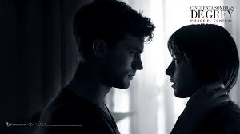

Cincuenta Sombras de Grey92% de coincidencia 2 h 10 minCincuenta Sombras es una serie de películas de drama romántico-erótico, basadas en la trilogía Fifty Shades de la autora inglesa E. L. James.Despues de ser sometida anastasia se enamora perdidamente.REPRODUCIRTRAILERProtagonistas: Dakota Johnson, Jamie Dornan, Rita Ora. Genero: Romance.
 REPRODUCIR
TRAILER
REPRODUCIR
TRAILER